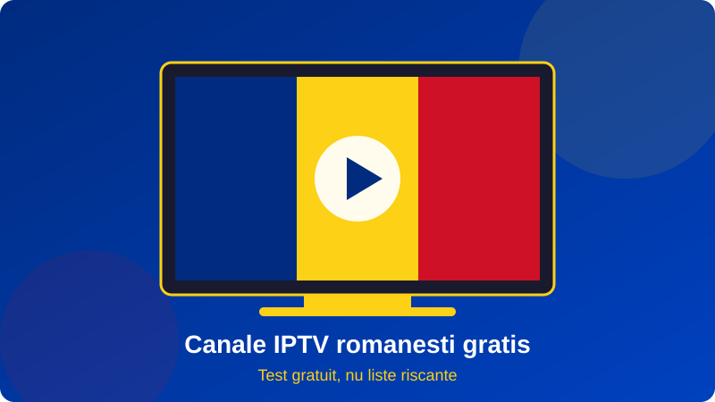

Cand scrii in Google canale iptv romanesti gratis, probabil vrei un lucru simplu: sa vezi televiziunea romaneasca fara sa platesti si fara bataie de cap. Ai in minte Pro TV, Antena 1, Kanal D, Digi24 sau Antena 3, ceva sport si, daca se poate, filme pentru seara. Intrebarea este cat de realist este acest lucru si ce risti cand alegi calea "gratis".
Raspunsul sincer este ca exista cateva variante legitime, dar si multe capcane. Listele M3U gasite pe forumuri se strica repede, aplicatiile necunoscute pot fi periculoase, iar fluxurile oficiale sunt adesea blocate pentru romanii din afara tarii. In schimb, un test gratuit oferit de un furnizor serios iti arata fara riscuri cum arata canale iptv romanesti gratis intr-un serviciu stabil.
In acest ghid explicam ce inseamna cu adevarat gratis, ce canale gasesti, cum testezi o oferta in cinci pasi, ce riscuri exista si cand merita sa alegi un abonament. Echipa Romania IPTV lucreaza zilnic cu familii din diaspora, iar sfaturile vin din situatii concrete. Pentru o privire de ansamblu, incepe cu ghidul principal despre iptv romania.

Cuprins
- Ce inseamna de fapt canale IPTV romanesti gratis
- Ce canale romanesti gasesti de obicei fara plata
- Riscurile listelor publice si ale site-urilor necunoscute
- Cum testezi gratuit canale IPTV romanesti in 5 pasi
- Canale IPTV romanesti gratis in diaspora
- Aplicatii si dispozitive potrivite
- Cum functioneaza ghidul de programe si inregistrarile
- Cand merita sa treci de la gratis la un abonament
- Greseli frecvente cand cauti canale gratis
- Intrebari frecvente
Ce inseamna de fapt canale IPTV romanesti gratis
Cand cauti canale iptv romanesti gratis, primesti pe Google trei tipuri de rezultate: liste M3U publicate pe forumuri si GitHub, aplicatii care promit mii de posturi fara plata si oferte de test oferite de furnizori. Toate se numesc "gratis", dar nu sunt deloc la fel. Primele doua sunt nesigure, iar al treilea este singurul care iti arata cum arata un serviciu stabil inainte sa platesti.
Listele M3U publice
O lista M3U este un fisier text cu adrese de fluxuri video. Cele publice sunt adunate de voluntari sau de scripturi automate si se stricau, de regula, in cateva zile. Un post care merge luni poate sa dispara joi, iar ghidul de programe lipseste aproape intotdeauna. Daca vrei sa intelegi formatul, citeste ghidul despre iptv m3u.
Aplicatiile "totul gratis"
Unele aplicatii afiseaza reclame agresive sau cer permisiuni inutile pe telefon. In cel mai bun caz primesti cateva posturi romanesti in calitate scazuta. In cel mai rau caz, instalezi software dubios pe dispozitivul familiei.
Testul gratuit al unui furnizor
Un test oferit de un furnizor serios dureaza de obicei cateva ore sau o zi si include lista completa de canale. Asta este varianta cinstita pentru cine vrea canale iptv romanesti gratis: vezi calitatea reala fara sa dai bani din prima.
Ce canale romanesti gasesti de obicei fara plata
Realitatea este ca multe posturi romanesti sunt disponibile oficial gratuit, pe site-urile sau aplicatiile proprii ale televiziunilor, cu anumite limitari. Intr-o lista de canale iptv romanesti gratis gasesti de regula generaliste mari, stiri, cateva posturi regionale si canale muzicale. Sportul si filmele recente sunt, in schimb, aproape mereu in pachete cu plata.
Canalele generaliste si de stiri
Posturile de stiri si cele generaliste sunt cele mai usor de gasit. Totusi, transmisiile oficiale gratuite pot avea restrictii geografice: din Germania sau Italia, unele fluxuri sunt blocate. Aici apare avantajul unui abonament IPTV, care functioneaza fara aceste blocaje. Vezi lista completa in canale romanesti si in articolul despre canale tv romanesti gratis.
Canale de sport, filme si copii
Meciurile, filmele noi si desenele animate premium sunt acolo unde se vede diferenta. O lista publica rareori include aceste categorii intr-o forma stabila. Familiile din diaspora cer, de obicei, tocmai ele: fotbal in weekend, filme seara si desene pentru copii dupa-amiaza.
| Categorie | Lista gratuita publica | Test al unui furnizor |
|---|---|---|
| Generaliste | Uneori disponibile | Complete |
| Stiri | Parțial | Complete |
| Sport | Rar, instabil | Incluse |
| Filme si seriale | Foarte rar | Incluse |
| Ghid de programe (EPG) | De obicei lipseste | Inclus |
Riscurile listelor publice si ale site-urilor necunoscute
Cine cauta canale iptv romanesti gratis ar trebui sa stie cat de repede se strica experienta atunci cand sursa nu este controlata.
Instabilitate si fluxuri care dispar
Un flux public nu are nicio garantie. Cand mii de oameni deschid aceeasi adresa, serverul cedeaza. Rezultatul: imagine inghetata exact in minutul important al meciului.
Securitate si date personale
Paginile care cer cont, card "pentru verificare" sau instalarea unui fisier APK din surse necunoscute sunt un semnal clar de alarma. Nu introduce niciodata datele cardului pentru ceva promovat ca gratuit.
Aspecte legale
Multe liste publice contin fluxuri retransmise fara drepturi. Poti citi mai multe despre acest subiect in articolul iptv romania legal. Alege intotdeauna surse transparente.
Cum testezi gratuit canale IPTV romanesti in 5 pasi
Cea mai buna cale catre canale iptv romanesti gratis sigure este un test controlat. Urmeaza pasii de mai jos.
Pasii testului
- Cere un test fara card si fara contract, direct pe WhatsApp.
- Instaleaza aplicatia recomandata pe televizor sau pe telefon.
- Verifica minimum cinci canale: un post generalist, unul de stiri, unul de sport, unul de filme si unul pentru copii.
- Priveste seara, intre orele 20:00 si 23:00, cand serverele sunt cele mai incarcate.
- Noteaza daca imaginea se opreste, daca sunetul este sincron si daca ghidul de programe functioneaza.
Ce inseamna un test reusit
Daca timp de cateva ore nu apar blocaje, imaginea ramane clara, iar suportul raspunde repede, ai gasit un serviciu bun. Daca testul esueaza, nu ai pierdut nimic. Ghidul despre free iptv romania detaliaza si alte variante.
Canale IPTV romanesti gratis in diaspora
Romanii din Germania, Italia, Spania, Marea Britanie, Belgia sau Franta cauta canale iptv romanesti gratis pentru ca vor sa tina legatura cu tara. Emisiunile, stirile si programele de weekend conteaza mai mult cand esti departe de casa.
Restrictii geografice pentru posturile oficiale
Multe televiziuni limiteaza transmisia online la Romania. Un abonament IPTV nu are aceasta limita, deoarece fluxul vine printr-o infrastructura dedicata. Pentru mai multe detalii, citeste iptv romania diaspora.
Viteza de internet necesara
Pentru HD ai nevoie de minimum 10 Mbps stabili, iar pentru 4K de aproximativ 25 Mbps. Conecteaza televizorul prin cablu Ethernet daca poti, pentru ca Wi-Fi-ul instabil este cauza frecventa a blocajelor.
Aplicatii si dispozitive potrivite
O lista buna nu inseamna nimic fara aplicatia potrivita. Pe Smart TV, Android TV Box, Fire TV Stick, Apple TV, telefon sau computer poti folosi aplicatii precum IPTV Smarters sau TiviMate. Compara optiunile in best iptv player si iptv smarters pro.
Smart TV
Samsung si LG accepta aplicatii dedicate, iar Android TV le suporta direct din magazin.
Box Android si Fire TV Stick
Un box Android ofera cea mai buna stabilitate pentru fluxuri live. Fire TV Stick este o varianta economica pentru al doilea televizor. Afla mai multe despre box iptv.
Cum functioneaza ghidul de programe si inregistrarile
Un avantaj pe care listele publice rareori il ofera este EPG-ul. Ghidul de programe iti arata ce ruleaza acum si ce urmeaza, iar cu el poti programa inregistrari sau reveni la o emisiune pierduta. Cand testezi canale iptv romanesti gratis, verifica daca ghidul este completat pentru canalele romanesti si daca ora este corecta pentru fusul tau orar.
Catch-up si inregistrari
Unele pachete includ catch-up de cateva zile. Intreaba furnizorul dinainte, pentru ca nu toate canalele au aceasta functie.
Favorite si organizare
Dupa ce ai primit lista, creeaza un grup de favorite cu cele 10-15 posturi pe care le urmaresti zilnic. Economisesti timp si eviti derularea prin sute de canale.
Cand merita sa treci de la gratis la un abonament
Daca urmaresti televizor doar ocazional, o oferta de test sau un post oficial poate fi suficient. Dar daca vrei sport, filme, ghid complet si stabilitate zilnica, un abonament este mai practic. Preturile corecte pornesc de la cativa euro pe luna si scad la planurile anuale, fara contract pe termen lung.
Ce sa ceri inainte sa platesti
- Test gratuit fara card.
- Suport in limba romana, inclusiv seara si in weekend.
- Server alternativ pentru zilele de meci.
- Politica clara de reactivare si plata sigura.
Cum se compara cu alte servicii
Fiecare comunitate are propriile servicii: de exemplu, greek iptv pentru canale grecesti sau tilaa iptv pentru piata nordica. Pentru televiziunea romaneasca, Romania IPTV este construit special pentru diaspora. Compara si cu ghidul best iptv romania, iar daca vrei alte detalii citeste canal iptv, buy iptv si big iptv.
Greseli frecvente cand cauti canale gratis
Majoritatea problemelor apar din graba. Iata ce vedem cel mai des la persoanele care incep sa caute canale iptv romanesti gratis.
Ai incredere in prima lista gasita
Prima lista din rezultate nu este cea mai buna, ci cea mai bine promovata. Verifica data ultimei actualizari si nu salva fisiere de pe pagini pline de reclame.
Ignori ghidul de programe
Fara EPG, trebuie sa deschizi fiecare post ca sa vezi ce ruleaza. Pentru o familie cu copii si seriale preferate, asta devine frustrant dupa prima saptamana.
Testezi doar la pranz
La ora 13:00 orice server pare bun. Problemele apar seara si in weekend, asa ca testul trebuie facut in orele de varf. Acolo se vede daca un serviciu rezista cu adevarat.
Nu verifici suportul
Un furnizor bun raspunde in cateva minute si te ajuta sa configurezi aplicatia. Pune o intrebare in timpul testului si vezi cat dureaza raspunsul: este cel mai bun indicator al serviciului de dupa abonare.
Folosesti un singur dispozitiv pentru tot
Daca ai doua televizoare, testeaza pe ambele. Un Smart TV mai vechi poate fi lent, in timp ce un box Android sau un Fire TV Stick ruleaza aceleasi canale fara probleme.
Intrebari frecvente
Exista canale IPTV romanesti gratis cu adevarat?
Exista posturi oficiale gratuite pe site-urile televiziunilor si oferte de test la furnizori. Listele publice M3U sunt instabile si pot dispare oricand, deci nu sunt o solutie de incredere pe termen lung.
Sunt sigure listele M3U gratuite de pe internet?
De obicei nu. Pot contine fluxuri retransmise fara drepturi, reclame agresive sau linkuri catre aplicatii dubioase. Evita sa instalezi fisiere din surse necunoscute.
Pot vedea canale romanesti gratis din strainatate?
Unele posturi sunt blocate geografic in afara Romaniei. Un abonament sau un test IPTV functioneaza in Germania, Italia, Spania, Marea Britanie si alte tari, cu internet stabil.
Cum primesc un test gratuit pentru canale romanesti?
Scrie pe WhatsApp echipei Romania IPTV, primesti datele de acces si instalezi aplicatia pe dispozitivul tau. Nu se cere card bancar pentru test.
Ce viteza de internet ai nevoie?
Minimum 10 Mbps pentru HD si aproximativ 25 Mbps pentru 4K. Un cablu Ethernet reduce blocajele fata de Wi-Fi.
Pot vedea sport gratis pe IPTV?
Sportul este rar gratuit si stabil. Meciurile importante sunt in pachetele cu plata, iar testul unui furnizor iti arata cum se vad inainte de abonare.
Pe ce dispozitive merg canalele IPTV?
Pe Smart TV, Android TV Box, Fire TV Stick, Apple TV, telefon, tableta si computer, prin aplicatii compatibile cu liste M3U sau Xtream.
Care e diferenta dintre gratis si abonament?
Gratis inseamna de obicei instabilitate, fara suport si fara ghid. Abonamentul ofera stabilitate, EPG, suport in romana si servere dedicate.
Vrei sa testezi canalele romanesti fara risc?
Scrie-ne pe WhatsApp si primesti un test gratuit cu Romania IPTV: fara card, fara contract, cu suport in limba romana.
Cere test gratuit pe WhatsAppConcluzie
Daca doresti canale iptv romanesti gratis, cea mai buna strategie este sa eviti listele publice instabile si sa ceri un test de la un furnizor transparent. Verifica canalele generaliste, stirile, sportul si ghidul de programe, apoi decide daca un abonament iti convine. Astfel ai televiziunea romaneasca la indemana, oriunde te-ai afla, fara riscuri inutile.
Pentru mai multe informatii, citeste ghidurile despre iptv romania, canal iptv, buy iptv si big iptv. Apoi scrie-ne pe WhatsApp si porneste-ti canalele preferate cu Romania IPTV.